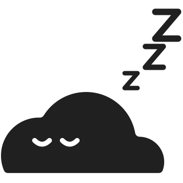

Built on Dream-1 and the Dream Labs API
Sweet Dream runs a MuJoCo simulation of the YAM two-arm robot with Dream-1 in the loop. A batch seed gives every episode its own object layout, and Vary per episode also draws the workspace camera (±3 cm, ±8°, field of view ±8°), the light (0.8× to 1.2×) and the room from each episode's seed, so the same seed reproduces the same episodes. While Dream-1 acts, a failure monitor reads the simulator's ground truth and spots a stall, a drop, a missed grasp or an object pushed away; a rule-based recovery script then takes the arms with inverse kinematics and finishes the task (grasp, transport, set down, retreat), handing the object from one arm to the other when only one reaches it and only the other reaches the target.
Every run is judged by success rules for its task type (pick & place, move to an area, lift, push, goal scenes drawn on the camera picture), which a person's label overrides. The picked runs are saved as one LeRobot v2.1 dataset with the YAM embodiment (right arm first, joints in radians, grippers 0 to 1, three cameras at 5 fps), checked with Dream Labs' own validator, uploaded, and used to fine-tune Dream-1 through the Dream Labs API. The new model then runs in the same scenes for comparison.
We count how many episodes end as successes, since only those go into the dataset.
| Setting | Episodes | Success |
|---|---|---|
| Rule-based only, "put the banana on the plate", varied camera, light and room | 68 valid | 66 (97%) |
| Data collection (Dream-1 + recovery), failures handed to the script sooner, same 3 seeds | 3 | 1 → 3 |
| Rule-based script on 4 pick-and-place tasks × 5 seeds, after the reach and hand-over fixes | 20 | 4 → 7 |
From the rule-based batches we keep one episode per seed: 50 unique seeds, 5,078 frames at 5 fps in two rooms (30 YAM tabletop, 20 Evening den). The dataset passes Dream Labs' validator locally and was uploaded and processed by Dream Labs, ready for a fine-tuning job.
Fine-tuning Dream-1 on this dataset and testing the model against Dream-1 on the 50 evaluation seeds is in progress; results will be added here.
Rule-based episodes of "put the banana on the plate", workspace camera at 5 fps (the frames Dream-1 sees).
Each episode has its own seed and an environment set by hand: six rooms, light from 0.3× to 2×, five camera viewpoints with tilt, pan, roll and field of view changes, a blurred camera, and a gray work surface. The rule-based script finishes the task in all of them.
Every episode records the workspace camera and both wrist cameras, the three views Dream-1 is trained on.
python3 -m venv ~/dream-env
~/dream-env/bin/pip install dreamlabs pyarrow av
~/dream-env/bin/python app.py --port 8000
# open http://localhost:8000 and sign in with your Dream API keyEvery page and option is described in the usage guide.
@misc{sweetdream2026,
title = {Sweet Dream: Diverse Data for Custom Dream-1 Fine-Tuning},
author = {{Sweet Dream contributors}},
year = {2026},
howpublished = {\url{https://github.com/2btlFe/Sweet-Dream}}
}